视频教程
甑糕制作过程
一、甑糕简介
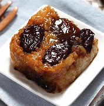
- 几乎在每一个陕西人的记忆里，都有这一碗热腾腾的传统小吃——甑糕
- 经久不衰才是经典，今天就给大家蒸一锅蜜枣甑糕
- 💡 简介：甑糕是陕西传统风味小吃，用糯米、红枣蒸制而成，软糯香甜。
二、糯米的选择与处理
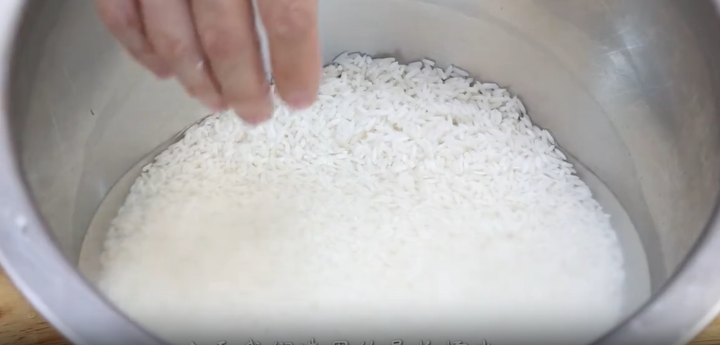
- 长糯米：软糯中带点嚼劲
- 圆糯米：口感更软糯一些（可掺着用）
- 提前用清水浸泡3小时以上
- 米类用开水先焯一下，让米吸足水分
- 煮到捞起来轻轻用手一捏就碎的程度，手感黏黏的即可
- 💡 提示：这样蒸出来的甑糕，软硬度刚刚好。
三、拌料
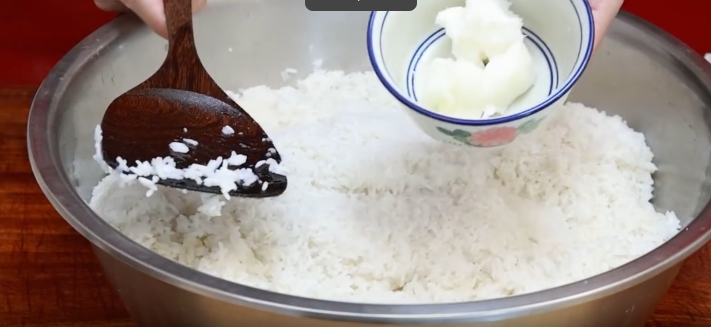
- 糯米趁热少拌一点猪油（提光泽、提香）
- 如果喜欢更甜的口味，可以往里面拌一点白糖
四、枣的处理
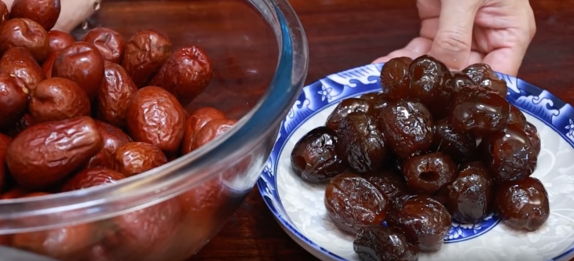
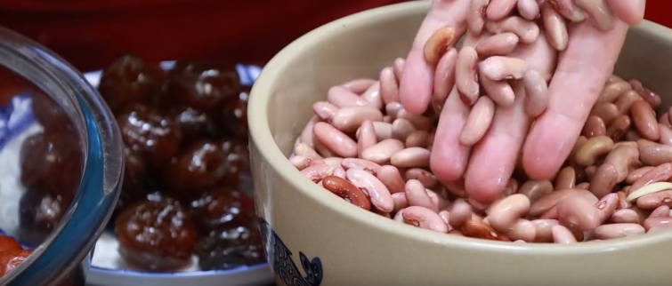
- 红枣：用清水泡一晚上，或用开水煮一煮，泡胀煮趴
- 蜜枣：提前泡胀，提高甜度
- 💡 提示：以红枣为主，蜜枣为辅。蜜枣不能太多，多了腻口。红枣蒸到软烂，上刀一抹就能形成枣泥。
五、铺层（层层有料）
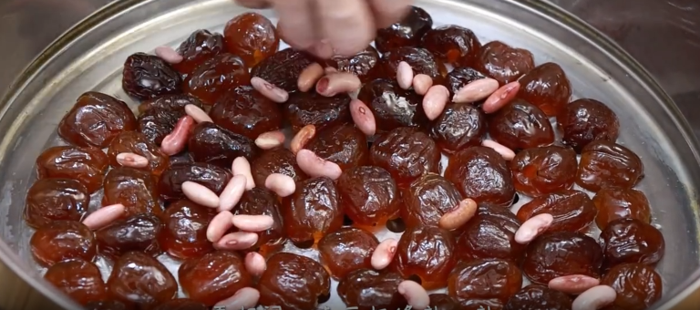
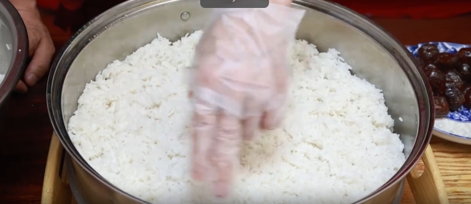
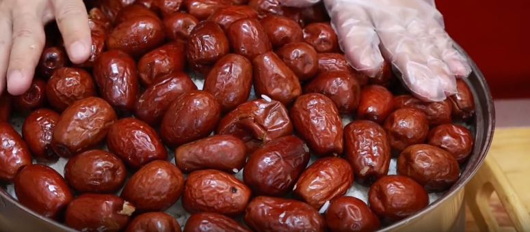
- 第一层：豆子铺底，补一补缝隙
- 第二层：糯米，中间为中心，一铲子一铲子摊匀
- 第三层：豆子铺平
- 第四层：糯米，松松散散铺成小山坡状
- 第五层（最上层）：大红枣铺满
关键要点：不要摊得太实，要松松散散；留出气孔；上筷子扎几个孔，更容易蒸熟、蒸透。
六、蒸制（火候是关键）
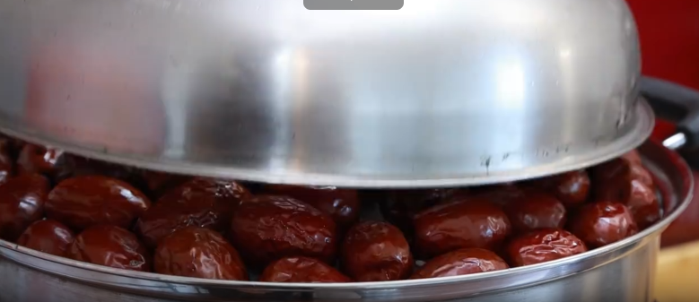
- 锅里：开水多一些
- 时间：需要较长时间
- 传统做法：晚上九、十点上锅，蒸到凌晨四、五点出锅
- 💡 提示：甑糕吃的就是火候。蒸制过程中，米香和枣的甜香飘得满屋子都是。
七、出锅与装饰
- 出锅前可以撒一些白糖，进一步提高甜度
- 喷点水让白糖更好融化
- 蒸到位了，枣全部成枣泥
八、切块与装碗
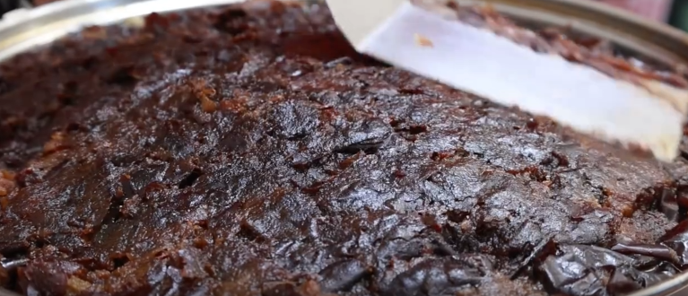
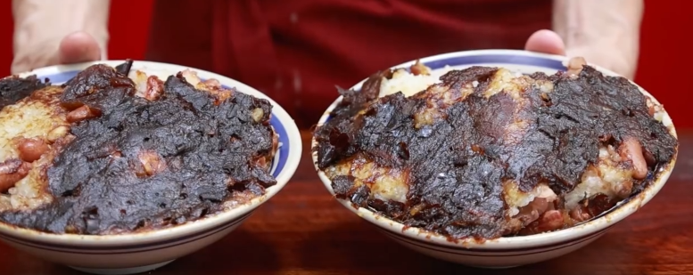
- 整整齐齐地挨着边踩三刀
- 一层枣、一层米、一层豆，再一层米
- 蜜枣也看得见，层次分明，层层有料
- 抹在碗里，枣泥要给上
- ✅ 完成：一碗热气腾腾的陕西甑糕制作完成！
九、成品标准
- 层次分明：枣、米、豆层层可见
- 枣泥充分：红枣蒸到软烂，一抹成泥
- 软糯香甜：米软糯，枣香甜
- 口感丰富：长糯米带嚼劲，圆糯米更软糯
十、制作要点总结
- 1. 糯米浸泡：至少3小时，焯水吸足水分
- 2. 枣要泡趴：红枣泡一晚或煮软，才能形成枣泥
- 3. 铺层要松：不要压实，留出气孔
- 4. 蒸制要久：传统做法蒸一整夜，火候到位
- 5. 层次分明：枣、米、豆层层铺匀
- ✅ 掌握这五点：蒸出一锅地道的陕西甑糕！